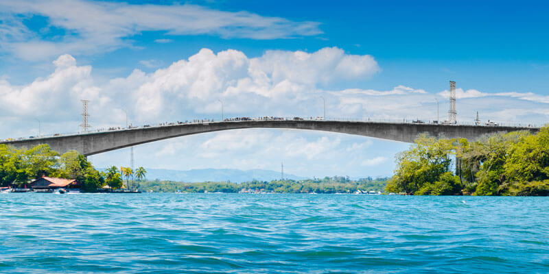

Río Dulce es un río que conecta el Lago Izabal con el Mar Caribe, atravesando paisajes tropicales espectaculares y pueblos pintorescos.
Es una de las rutas acuáticas más bellas de Guatemala, hogar de aves exóticas, manatíes y comunidades indígenas y garífunas.
Ubicación: Departamento de Izabal, Caribe guatemalteco.
Actividades: Paseos en lancha, visitas al Castillo de San Felipe, avistamiento de aves, exploración de manglares y llegada a Livingston.
